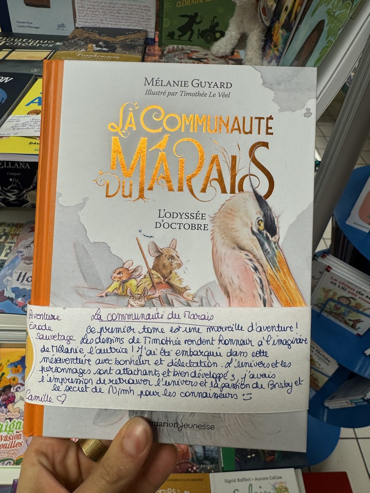
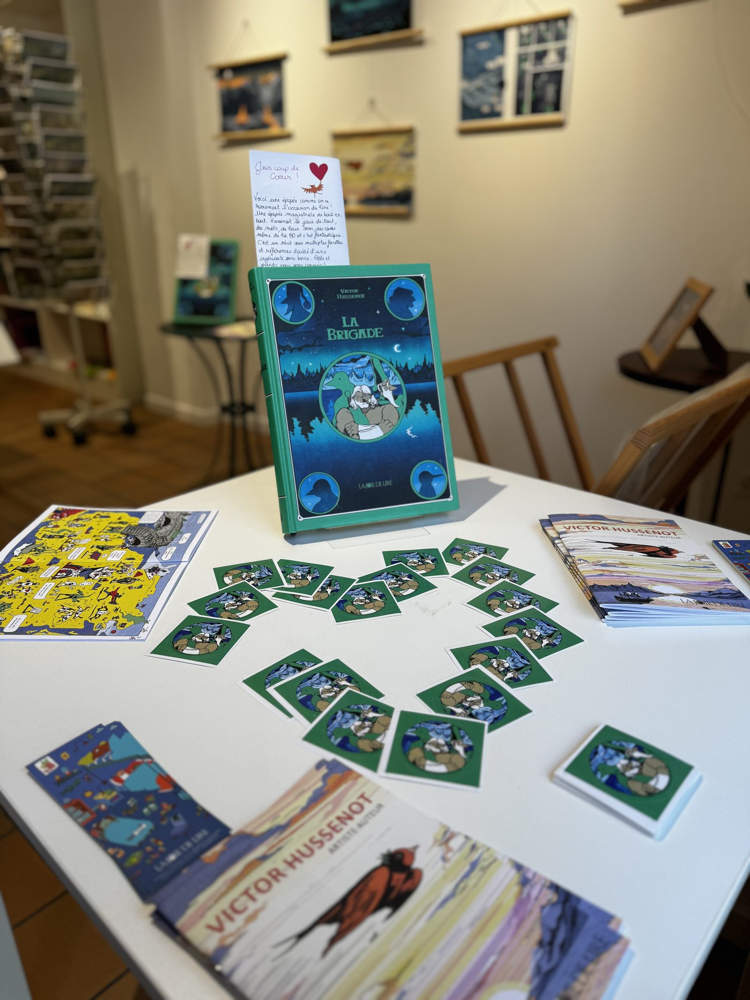
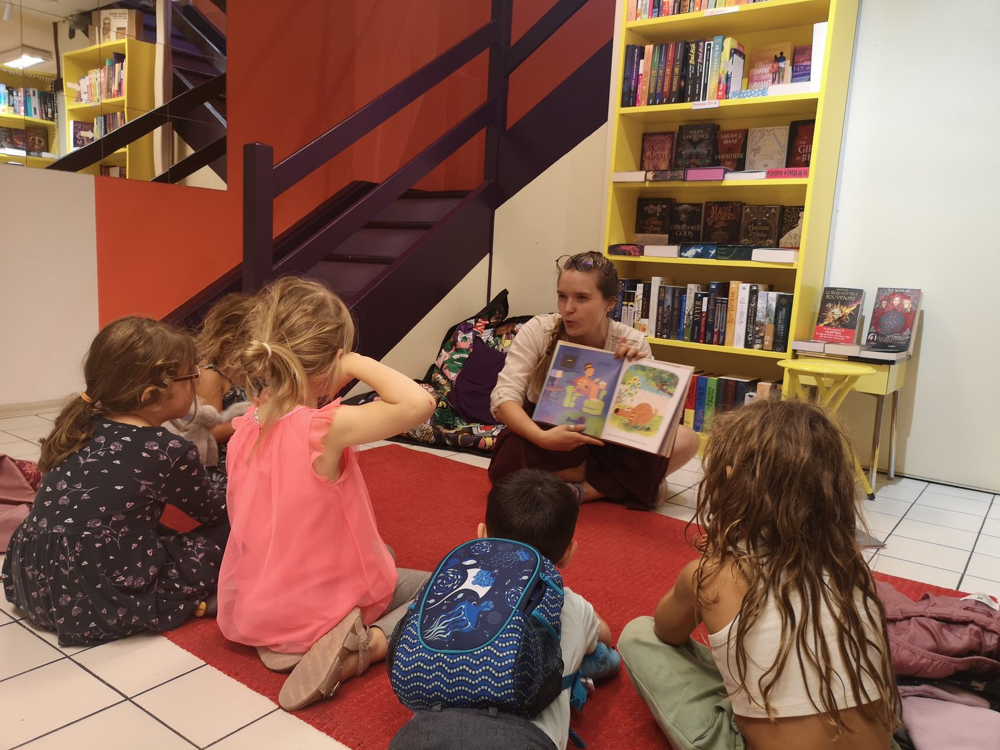
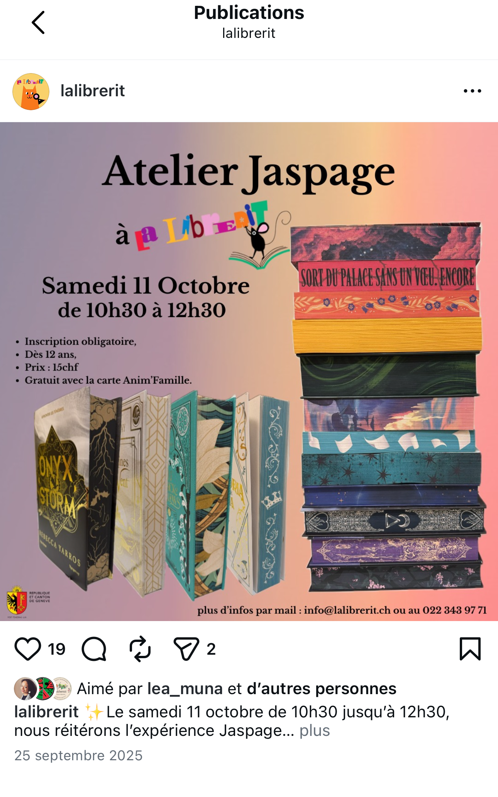

Librerit : développement d'un fonds BD, jeunesse et manga
Participation à la structuration et à la valorisation d'un fonds mêlant jeunesse, bande dessinée, manga et littérature, dans une librairie indépendante à Carouge, spécialisée en jeunesse sans s’y limiter.
- Emplacement
- Librerit, Carouge (Genève)
- Date
- 2024 – aujourd'hui
- Rôle
- Libraire
- Type de projet
- Valorisation de fonds / médiation du livre / développement de collection
- Contenu
- Création d'un fonds adulte BD, consolidation du rayon BD jeunesse / manga, retour à la littérature et à l'imaginaire
Conseil personnalisé et coups de cœur manuscrits
Mon travail à la Librerit repose d’abord sur une pratique quotidienne du conseil personnalisé, fondée sur l’écoute, l’échange et l’adaptation aux publics. J’accompagne des lecteur·rices aux profils variés — enfants, adolescent·es, parents, adultes, amateur·rices de bande dessinée, de littérature ou d’imaginaire — en proposant des recommandations ajustées à leurs attentes, à leurs habitudes de lecture ou à leurs envies du moment.
Cette médiation se prolonge à l’écrit à travers des coups de cœur manuscrits déposés directement sur les ouvrages, mais aussi à travers des recommandations publiées sur les supports de la librairie. Ce travail me permet d’articuler prescription, relation aux publics et mise en valeur des œuvres dans un cadre à la fois concret, quotidien et très incarné.
Tables thématiques et espaces hors les murs
Une part importante de mon travail concerne la mise en valeur du fonds à travers des tables thématiques, des sélections saisonnières et des dispositifs de présentation pensés pour attirer l’attention, susciter la curiosité et rendre les collections plus lisibles. Je participe ainsi à la conception de mises en avant autour de différentes thématiques ou temporalités, en articulant choix éditoriaux, cohérence visuelle et logique de médiation.
Je participe également au développement de l’espace librairie installé au Théâtre de Carouge, en collaboration avec Margaux Kupferschmid, responsable des partenaires scolaires et culturels. Cette mission m’amène à réfléchir à la manière dont une sélection de livres peut dialoguer avec un lieu culturel, une programmation et des publics spécifiques. Il ne s’agit pas seulement d’assurer une présence hors les murs, mais de construire une forme de partenariat dans laquelle la librairie devient un relais de médiation en lien avec le théâtre. Cette expérience renforce mon intérêt pour les projets situés à l’intersection de la valorisation de fonds, de la médiation culturelle et du travail partenarial.
Lectures d'albums et ateliers en librairie
À la Librerit, la librairie est aussi pensée comme un lieu vivant de médiation. Je participe à plusieurs temps d’animation autour du livre, notamment à travers des lectures d’albums avec les enfants, des ateliers en librairie et différentes actions destinées au jeune public. Ces moments demandent une attention particulière au rythme, à l’oralité, à la présence et à la manière de transmettre un contenu dans un cadre à la fois accueillant et stimulant.
Ces expériences prolongent le travail de conseil en le déplaçant vers des formes plus collectives et plus interactives. Elles montrent combien la librairie peut être un espace de découverte, d’échange et de transmission, au-delà de sa seule fonction de vente.
Création de contenus pour les réseaux sociaux
La médiation du livre se prolonge aussi à la Librerit dans l’environnement numérique. Je participe à la création de contenus pour les réseaux sociaux à travers des posts, des recommandations, des formats vidéo courts et des mises en avant visuelles pensées pour Instagram. Ce travail implique de réfléchir à l’angle choisi, à la forme du message, au rythme du contenu et à son adaptation aux codes du support.
Je contribue ainsi à des contenus très différents selon les objectifs : formats humoristiques pour rendre le métier plus visible, recommandations incarnées, mises en scène éditoriales autour d’un ouvrage ou valorisation plus graphique d’un fonds. Cette dimension me permet de développer des compétences en rédaction, en création visuelle, en tournage, en montage et en adaptation de la médiation aux usages numériques.
Formats vidéo et mise en avant éditoriale sur Instagram
À Librerit, la médiation du livre se prolonge aussi dans l’environnement numérique. Je participe à la création de contenus pour les réseaux sociaux, qu’il s’agisse de formats vidéo courts ou de mises en avant éditoriales pensées pour Instagram. Ces publications prolongent le travail de recommandation mené en librairie, en adaptant le ton, la forme et la composition visuelle au support numérique.
Vidéo humoristique sur le métier de libraire
Cette vidéo humoristique, publiée sur le compte Instagram de la Librerit, met en scène le métier de libraire dans un format court, accessible et pensé pour les usages des réseaux sociaux. Elle participe à une forme de médiation numérique qui ne passe pas uniquement par la recommandation d’ouvrages, mais aussi par la valorisation du quotidien professionnel, du rapport aux livres et de la relation avec les publics. Ce type de contenu demande d’adapter le ton, le rythme et la forme à un format plus immédiat, tout en conservant une cohérence avec l’identité de la librairie.
Traces de médiation et de valorisation





Retour analytique
Cette expérience m'apprend combien la médiation en librairie jeunesse repose sur une attention fine aux publics et à leurs besoins. Travailler à la Librerit me confronte à un public très large, mais très souvent centré autour de la jeunesse : enfants, adolescent·es, parents, accompagnant·es, enseignant·es ou autres adultes venus chercher des repères pour conseiller, offrir ou accompagner la lecture.
Elle renforce chez moi l'idée qu'une librairie jeunesse joue un rôle important pour aider les plus jeunes à trouver leur place dans la lecture, à découvrir des univers qui leur correspondent et à construire progressivement leur rapport aux livres. Elle montre aussi combien il est essentiel de pouvoir guider les adultes qui accompagnent ces jeunes lecteurs, qu'il s'agisse des familles ou des enseignant·es, en proposant des recommandations adaptées, lisibles et pertinentes.
Cette expérience me permet ainsi de développer une médiation à la fois très concrète, très relationnelle et profondément attentive aux usages, où le conseil, la valorisation des fonds, les animations et la communication prolongent un même objectif : rendre la lecture plus accessible, plus vivante et plus appropriable pour des publics variés, avec une place centrale accordée à la jeunesse.